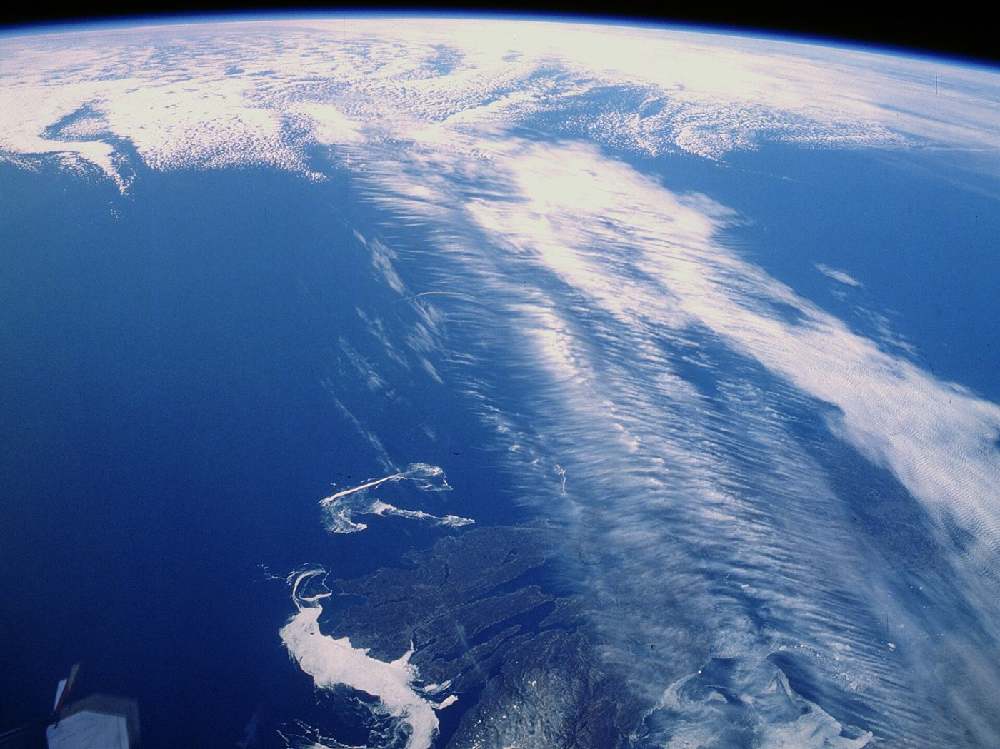

Cómo se ondula el clima del planeta
A unos 9 kilómetros de altura hay ríos de viento que dan la vuelta al planeta. No van derecho: serpentean hacia el norte y hacia el sur en ondas enormes. Esas ondulaciones acompañan a los sistemas del tiempo de las latitudes medias. Y detrás hay un mecanismo sorprendentemente simple: la Tierra gira distinto según la latitud.
Las corrientes en chorro son bandas relativamente estrechas de viento fuerte en la alta atmósfera, típicamente alrededor de los 9100 metros [1]. El chorro polar está entre los 50° y 60° de latitud, en ambos hemisferios, y el subtropical cerca de los 30° [1]. Pueden superar los 442 km/h [1]. No son una línea, como se dibujan en los mapas, sino regiones donde el viento aumenta hacia un núcleo central [1]. Además, «siguen al Sol»: en primavera se corren hacia el polo y en otoño hacia el ecuador [1].

El oeste de las latitudes medias se organiza típicamente en 4 a 6 «ondas largas»: el viento pasa a través de ellas, y las ondas mismas se mueven lentamente o no se mueven [2]. Son las ondas de Rossby, también llamadas ondas planetarias, el tipo de onda más importante para los procesos meteorológicos de gran escala [3].
Para entender qué las sostiene, hay que pensar en la vorticidad, la tendencia del aire a girar. El aire gira por dos motivos: su propio remolino y la rotación de la Tierra. La parte de la Tierra, el parámetro de Coriolis f, crece con la latitud. Esa variación se llama efecto beta [3]:
En un fluido de espesor constante, la onda de Rossby es un movimiento que conserva la vorticidad absoluta: la del propio aire más la de la Tierra, y le debe su existencia a la variación de f con la latitud [3]. Si una columna de aire se desplaza hacia el polo en el hemisferio norte, f crece, así que la vorticidad propia del aire tiene que bajar, y adquiere un giro en sentido horario. Si se desplaza hacia el ecuador, le pasa lo contrario (un razonamiento propio a partir de esa conservación).
Esos giros arrastran al aire vecino. Lo empujan de vuelta hacia su latitud original, y las parcelas oscilan alrededor de su latitud de equilibrio, mientras el patrón de máximos y mínimos de vorticidad se traslada hacia el oeste [3]. La rotación hace de resorte.
La cuerda y el resorte: en una ola de la superficie, la gravedad devuelve el agua a su lugar. En una onda de Rossby, el «resorte» es la diferencia de rotación entre latitudes: moverse hacia el norte o el sur cuesta giro, y ese giro te trae de vuelta.
La velocidad de la onda respecto del viento medio U es negativa: siempre va hacia el oeste, y más rápido cuanto más larga es la onda [3]:
Para ondas de unos 6000 kilómetros de longitud, la velocidad relativa al flujo es de aproximadamente −8 m/s [3]. Como el viento del oeste suele ser mayor que 8 m/s, esas ondas se mueven igualmente hacia el este, pero más lento que el viento [3]. Las ondas más largas pueden quedar casi quietas respecto del suelo, y eso coincide con que las ondas largas se muevan poco o nada [2]. Si un patrón no se mueve, el mismo tiempo se queda varios días en el mismo lugar (un razonamiento propio).
La misma fórmula sirve para comprobar: a 45° de latitud, β vale 1,6 × 10⁻¹¹ m⁻¹s⁻¹. Con 6000 kilómetros de longitud de onda en las dos direcciones, β/(k² + l²) da unos 7 m/s (un cálculo propio), coherente con los 8 m/s de las notas.
Los remolinos que acompañan a estas ondas transportan cantidad de movimiento hacia los polos en la alta troposfera [2], y por eso los vientos del oeste no desaparecen y la circulación general tiene la forma que tiene [2]. También pueden influir en los límites de la celda de Hadley [4].
Las corrientes en chorro corren en altura y se ondulan porque el aire desplazado hacia el norte o el sur cambia de vorticidad para compensar la rotación de la Tierra, que depende de la latitud. Esas ondas de Rossby tienden a ir hacia el oeste respecto del viento y las más largas casi no se mueven. Es un ejemplo de cómo un detalle geométrico, la forma esférica del planeta, organiza el tiempo de medio mundo.
Pregunta para la comunidad: Si no hubiera variación de f con la latitud, como en un tanque giratorio con fondo plano, ¿habría ondas de Rossby? Pensá qué haría de «resorte». ¿Cómo podrías simular el efecto beta en un tanque de laboratorio?